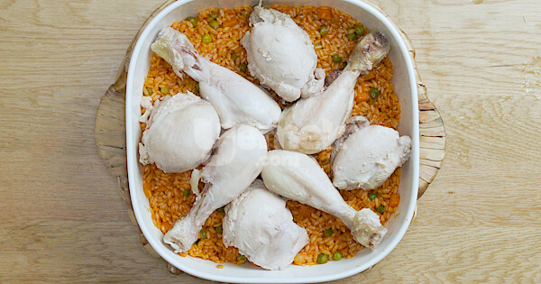
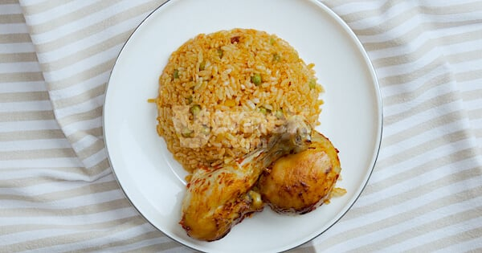

Bu pilav başka pilav. Nedenlerini bir bir sıralayalım. Bir kere kalıpların dışına çıkıyor ve fırında pişiyor. Yetmiyor içine bolca soğan, domates ve baharat giriyor. Bol tavuk suyuyla lezzetini ikiye katlıyor. Yanında da nar gibi kızarmış tavuk butlar eşlik ediyor. En güzeli de bu pilavın tane tane pişirme derdi yok. Tavukların nar gibi kızarması için küçük bir de sırrı var o da yoğurt ve salça ile hazırladığımız sos. Soğan ve domatesle kavurduğumuz pirinçleri, tavuk suyuyla buluşturuyor, soslu tavukların üzerine sıralıyor, veriyoruz fırına. Ağır ağır pişiriyor, afiyetle yiyoruz. Tam muhabbeti bol ziyafet sofralarınıza yaraşır bir lezzet.
Tarif: Berkay Türkmen
Kaç Kişilik: 4 kişilik Hazırlama Süresi: 15 dakika Pişirme Süresi: 30 dakika
Tavuklu Büryan Pilavı Tarifi İçin Malzemeler:
- 3 yemek kaşığı sıvı yağ
- 3 tatlı kaşığı tereyağı
- 1 adet soğan (yemeklik doğranmış)
- 2 adet havuç (küp doğranmış)
- 4 yemek kaşığı bezelye
- 1 çay kaşığı domates püresi
- 1,5 çay kaşığı tuz
- 1 çay kaşığı karabiber
- 2 su bardağı pirinç
- 8 adet tavuk but (haşlanmış)
- 3 su bardağı sıcak tavuk suyu
Üzeri İçin:
- 1 yemek kaşığı domates salçası
- 3 yemek kaşığı zeytinyağı
Tavuklu Büryan Pilavı Tarifi Nasıl Yapılır?
- Isınmış tencerede sıvı yağ ve tereyağ ile birlikte soğanları 2-3 dakika soteleyin.
- Üzerine havuç ve bezelyeleri ekleyip kavurmaya devam edin.
- Domates püresi, tuz ve karabiberini eleyin.
- Daha sonra bir taşım kaynatın.
- Yıkayıp suyunu süzdüğünüz pirinci de tencereye ekleyin ve 3-4 dakika kavurun. Ardından ocaktan alın.
- Hazırladığınız pirinci fırın kabına alın. Üzerine haşlanmış tavuk butlarını dizin.
- Sıcak tavuk suyunu da kalıba dökün. Bir kasede zeytinyağı ve salçayı karıştırın. Bu karışımı tavukların üzerine sürün.
- Pişirme kağıdını ıslatın ve buruşturup kabın üzerini örtün.
- Hazırladığınız büryan pilavını 200 derece fırında 25 dakika pişirin. Tavukların daha fazla kızarmasını isterseniz pişirme kağıdını üzerinden alıp bir 5 dakika daha fırınlayın.
- Sıcak olarak servis edin. Afiyet olsun!

